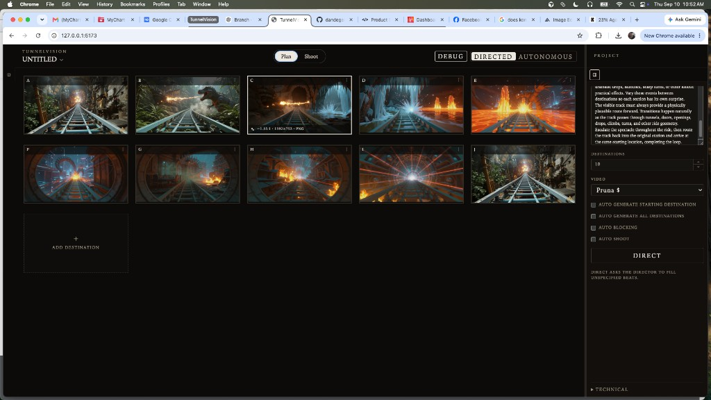
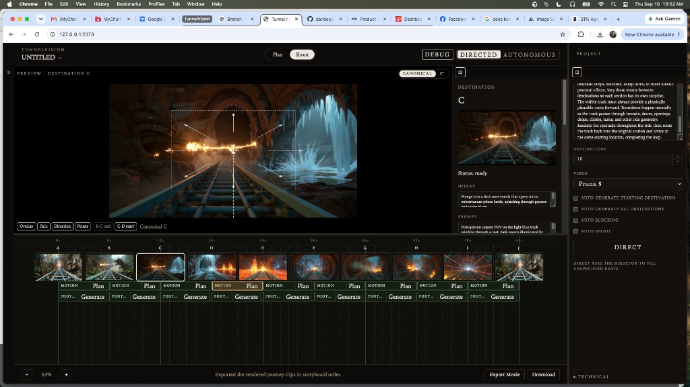

This chapter records the current Plan | Shoot product UI on a live untitled ten-destination train journey. Plan is a storyboard of constructed stills with media facts on the selected tile. Shoot is a production view of those destinations: MOTION Plan, FOOTAGE Generate, stored Camotion overlay on destination preview, and Export Movie. Camotion Phase 1 remains frozen. These captures are a UI checkpoint, not a Camotion experiment.
Header chrome is session. The storyboard is the movie.
Debug and Directed / Autonomous sit in the workspace header. Debug is on by default for now so Camotion work dirs are kept; it is still session UI, not project persistence. The Project panel holds the journey story, destination count, video model, auto stages, and DIRECT. DIRECT is the only Director invocation. Add Destination remains structural.

Plan — A live untitled project after sequential destination construction. C is selected; media facts sit on that still (~1.85:1 · 1392×752 · PNG). Add Destination follows J.

Shoot — Destination C with stored Camotion overlay on the canonical still. MOTION Plan runs the Cinematographer only. FOOTAGE Generate runs Camotion A′/B′ then video. Export Movie hard-joins rendered clips.
Plan
STORYBOARD WITH MEDIA FACTS
The capture is a live train / tunnel spectacle planned and constructed from a filmmaker story, not a research fixture. Specified stills remain authoritative. The selected tile shows provenance, friendly aspect, dimensions, and format. Generated A requests 16:9; uploaded A stores its pixel aspect as the project canonical. Construct of B…N passes that ratio as an explicit provider aspect_ratio, not match_input_image.
Clicking an unselected still selects it. Clicking the selected still opens the storyboard reel. The label strip opens destination details. Empty plan text on an actual still no longer blocks those details: generated A stores opening intent and the TV prompt; uploaded A with a story fills empty intent from the first sentence.
Shoot
MOTION PLAN · FOOTAGE GENERATE
Each interval is two stacked bands under the destination rail. Plan on MOTION inspects the pair and stores choreography; it does not create A′/B′. Generate on FOOTAGE runs Camotion then video. After a take exists, the destination preview can toggle Canonical against primed shooting frames and draw the stored CameraMotionPlan as a read-only overlay. The inspector lists that take's intent and prompt. Overlay, diagnostics, and A|B remain read-only on the take.
When only A is actual, Shoot still shows A and an FPO B that opens Plan on B. Product shoot does not pass a depth map. Camotion work dirs are kept while Debug is on.
This slice records product UI, not a new Camotion result.
Destination construction, Cinematographer inspection, stored overlay, and development video are wired for this live session. Camotion Phase 1 is unchanged. A constructed still is not by itself shootability evidence; Plan on MOTION is the Cinematographer inspection of the actual pair.